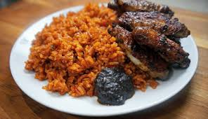

Jollof
Home

Description
Jollof, a popular Ghanaian dish, translates to "rice and beans" in Hausa, the contraction of "shinkafa da wake".
It's a staple food, often prepared with a distinctive reddish-brown color due to the use of Waakye leaves or mill.
Ingredients
- Rice
- Tomatoes
- Onions
- Garlic & Ginger
- Curry Powder
- oil
Steps
- Liquidise the tomatoes, onion and pepper in a blender
- Add the tomato purée, bay leaf, garlic, curry powder and thyme.
Simmer for a further couple of minutes, stirring occasionally, then add the stock or water and bring to boil
- Once boiling, add the rice and stir well, then turn down the heat and cover with a lid
- Check and stir occasionally to make sure there is enough liquid to cook the rice